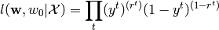

Session #: Next Meeting¶
- Start time:
- 08-05-2011 09:47
- End time:
- 08-05-2011 09:47
Questions¶
Here is a list of questions:
- Inference mentions that random forests will saturate beyond their training range. E.g. that random forest is bad for extrapolation. Is it and why?
- Inference mentions that there are little correlation between held back training and test sets AUC. He has calculated a 95% confidence interval on Pearson’s product moment correlation coefficient as r=[-0.38, 0.24]
- Inference also trained models on whole training data set, where he used a generalised-linear-model training approach and an approach where the model was obtained by optimising the training set AUC by numerical optimisation of the model parameters. Any idea what he talks about?
- Different notation. See next section
- In scikits.learn there is an option between using the L1 or the L2 norm as penalty function. It isn’t mentioned in the derivations in Bishop, Alpaydin, Hastie, Izenman etc. but what penalty does maximum likelihood correspond to. I think I have read somewhere that maximum likelihood is equivalent to L2-norm penalty (least square error?), but maybe that was assuming a gausian distribution for some of the distributions, and that shouldn’t be necessary with logistic regression, right?
Notation¶
When deriving the logistic regression Bishop uses this notation for the likelihood funtion

while eg. Alpaydin uses

Is the likelihood funtion the probability of the data given the parameters, or is it the probability of the parameters given the data? Or is it equivalent?